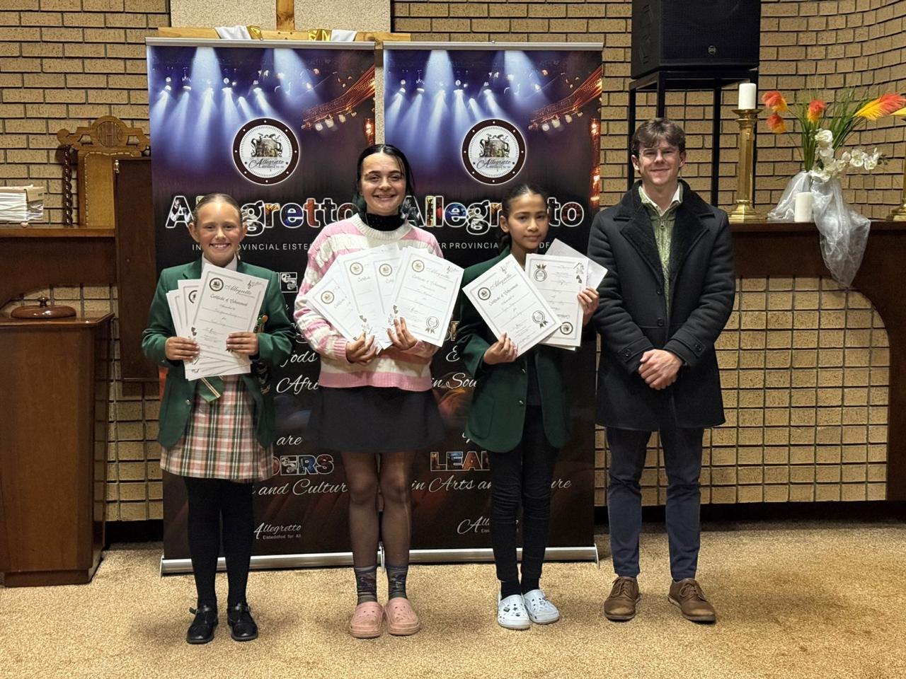
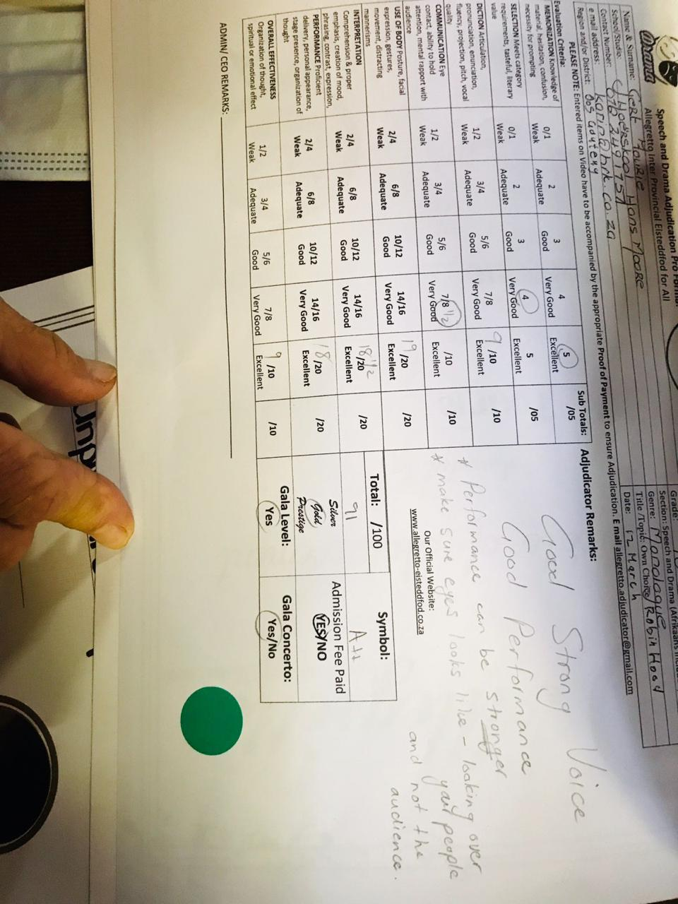
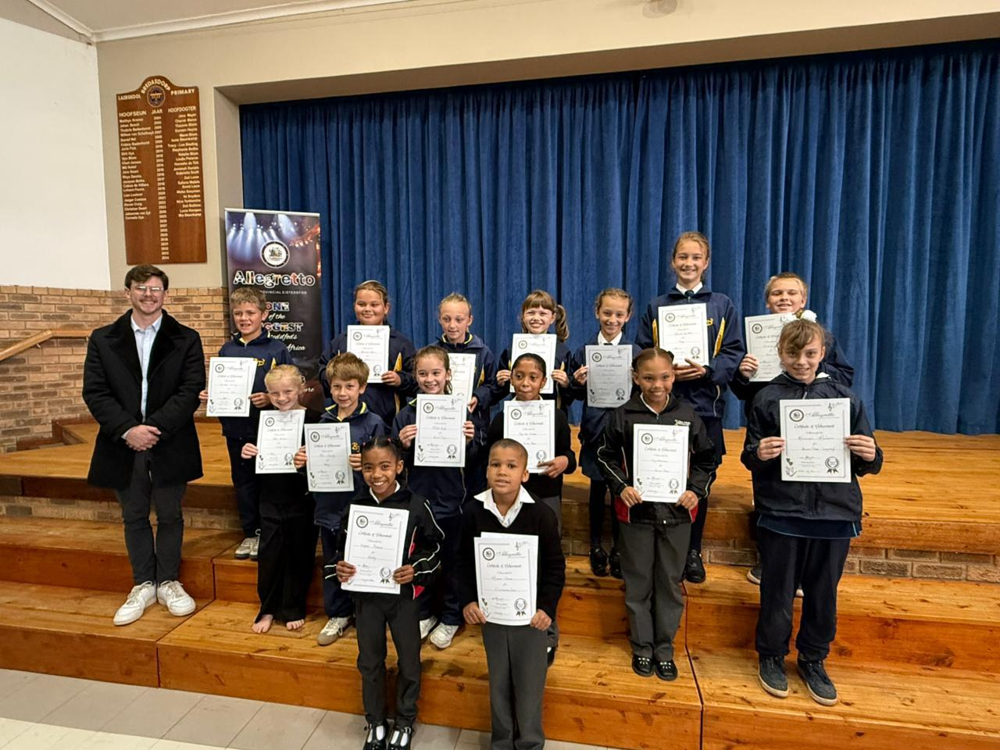

Private coaching
One-to-one over Teams. Eisteddfod pieces, monologues, auditions and prepared readings, worked to competition standard. R420 an hour.

Live online · Taught by a national eisteddfod adjudicator
Most drama teachers train students to perform. I adjudicate eisteddfods across South Africa, so I train them for what earns the marks — piece selection, interpretation, timing, projection and presentation, taught from the adjudicator's side of the table.
All coaching is live online over Microsoft Teams, so it does not matter whether you are in Pretoria, Polokwane or Plettenberg Bay.









Meet your coach
My name is Gert Fourie. I have been involved in eisteddfods since I was eight years old—first as a nervous competitor standing backstage, and now as a national adjudicator for the Allegretto Inter-Provincial Eisteddfod. I’ve sat on both sides of the table, and I know exactly where marks are won and quietly lost.
Drama isn't just about reciting lines; it's about presence, resonance, and the courage to be seen. My journey started with a simple love for storytelling, which evolved into a career dedicated to the technical mastery of performance. I take the rigorous standards I use when judging national competitions and bring them directly into my coaching sessions.
I believe every student has a unique voice waiting to be heard. My mission is to help learners bridge the gap between "doing well" and truly "winning the room." Whether it's an audition, a school production, or a high-stakes eisteddfod, I provide the practical, performance-led discipline needed to walk onto that stage calm, prepared, and in total control.
Read my adjudication & conflict-of-interest policyThree ways to work together
One-to-one over Teams. Eisteddfod pieces, monologues, auditions and prepared readings, worked to competition standard. R420 an hour.
Four to six learners, weekly, age-banded. Confidence, voice, expression and scene work. R590 a month.
Structure, argument and delivery for ATKV Redenaars, school leagues and debating. The learner writes; I teach them how. R1,350 a package.
The obvious question
For competition preparation, yes — and in some respects better. An eisteddfod adjudicator sits still, at a fixed distance, and watches a framed performance. That is very close to what a camera does. Every session is recorded, so the learner can watch themselves the way the adjudicator saw them, which is the single fastest way to improve.
What online does not replace is a full stage rehearsal with blocking and movement across a large space. I say so plainly on the enquiry call rather than after you have paid.
See exactly how a session runsWatch Gert in Action
Parent Perspectives
"My daughter was incredibly nervous about her first national eisteddfod. Gert didn't just help her with the lines; he gave her the tools to own the stage. She placed significantly higher than we ever expected."
"The 'adjudicator's eye' isn't just a marketing pitch. The specific technical feedback on projection and timing made an immediate difference in how his teachers viewed his performance."
"Having a coach who actually sits on the judging panels gives my son a massive confidence boost. He feels like he has the 'inside track' on what the marks are actually for."
How it starts
Free download
The same checklist I work through with private students — piece selection, timing, entrances, projection, costume and nerves. Written from the adjudicator's side of the table. Sent straight to your inbox, free.
Guides
Bookings